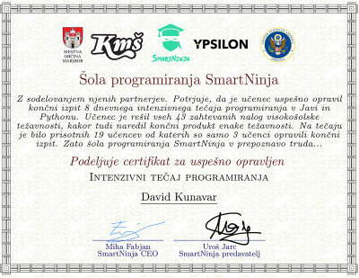

Star sem 20 let trenutno pa obiskujem prvi letnik Ekonomske Fakultete.
Prihajam iz obrobnega mesta Dol pri Ljubljani 15km iz centra Ljubljane.
Kot otroka me je veliko stvari zanimalo. Probal sem nešteto stvari, od šahu, košarke, robotike,
nogometa, badmintona itd. Udeležil sem se tudi raznih matematičnih tekmovanj.
Po končani osnovni šoli se je moja pot nadaljevala na Gimnaziji Moste. Žal pa sem po treh mesecih ugotovil,
da mi razred v katerem sem bil, ni ugajal. Zelo mi je pomembno v kakšnem okolju sem. Tako sem se odločil
prepisati na Gimnazijo Ledina. Že po prvem mesecu sem spoznal, da je bila to ena boljših odločitev, ki se jih do sedaj
sprejel. V gimnazijskih letih sem se bolj posvetil športu. Treniral sem košarko in proti koncu gimnazije začel
redno obiskovati fitnes. Z obiskovanjem fitnesa sem zelo pridobil na disciplini in samopodobi, kar me je naredilo
bolj samozavestnega.
Nato je sledil vpis na faks. Odločil sem se za EF, malo iz razloga ocen in večinoma pa zato, ker me denar in delovanje
finančnega sistema v državi in po svetu zelo zanima. Vedno sem se spraševal, kako velike banke in velika podjeta
delujejo in kako poteka celoten njihov proces. Slabo leto dni nazaj sem se odločil opraviti tečaj programiranja.
Na instagramu sem zasledil zavod Ypsilon. Zelo me je pritegnila njihova želja po širjenju znanja med
študenti. Videl sem, da imajo za sabo veliko število projektov. Naslednji pa je bil tečaj programiranja
v Pythonu. Tečaj sva od 15 udeležencev opravila samo 2. Ni potreboval veliko znanje, je pa
potreboval popolno zbranost in redno opravljanje domačih nalog. Ob koncu sem bil zelo ponosen nase. Vsak
je ustvaril svojo igrico. Moja je bila potapljanje ladjic. To smo prikazali tudi v Turtel.

Po opravljenem tečaju, sem začel malo bolj razmišljati kaj me pravzaprav
veseli. Začel sem raziskovati smeri programiranje in spletne strani so mi padle v oko. Nadaljeval sem
z inštruktorjem iz tečaja. Ob tem sem se največ naučil sam.
Veliko sem se naučil na youtubu tako, da sem vse
probal narediti sam. Zelo uporaben kanal se mi je zdel freeCodeCamp.
Naredil sem tudi spletno stran za neko gospo.
Če vas zanima, si jo lahko ogledate s pritiskom na ta Link
V projektu sem uporabil bootstrap, fontawesome, ter Formspree(za form). Med ustvarjanjem sem se zraven veliko naučil, kar mi je pri programiranju najbolj všeč, poleg tega da lahko poslušam muziko.
Po nekaj mesecih, sem ugotovil da to ni zame. Prijavil sem se na delovno mesto in preprostvo ugotovil da sedenja za računalnikom ni moja stvar. Rad sem na nogah, rad sem v stiku z ljudmi.
Programiranje se mi ni zamerilo, ni pa nekaj kar bi lahko počel dlje časa.
Trenutno ob faksu delam na recepciji v Clever-fit fitnesu na Vilharjevi 36. Delo mi je zabavno iz razloga, ker spoznam mnogo zanimivih ljudi. Rad navežem kontatke z ljudmi. Leta 2021 sem delal administrativna dela v podjetju Topdom. To delo ni bilo ravno dinamično in zabavno, sem pa se naučil slepega tipkanja. Poleg tega sem delal v hotelu v centru mesta. Veliko sem delal z ljudmi in se mi zdi, da lahko hitro navežem dober stik.
V prostem času, najraje igram košarko. Rad delam dinamična dela pri katerih lahko pomagam drugim. Pomembno mi je da v svojem delu vidim dodano vrednost in da se pri tem počutim dobro.
Če vas o meni zanima kaj več, mi lahko tukaj pošljete kratko vprašanje.